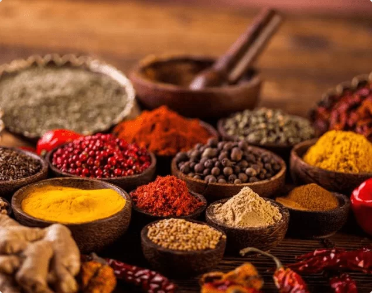

|
Magic Masala "मॅजिक मसाल्याचे एकाच तत्व, स्वस्त मिळेल भरपूर तत्व" |
||
| *BLENDED SPICES
*PURE SPICES *ASAFOETIDA *EXOTIC RANGE *PASTE *TASTEETO |
 |
Our Recipe For Success Magic is India’s No.1 spice brand that offers a wide range of whole spices and blends. With over 52 years of experience, Magic maintains the best standards of purity, freshness and authenticity in every pack. Magic’s great taste of purity is backed by research, innovation and technology. The success of Magic has reaped several rewards. It has been the proud recipient of the Super brand status 8 times – 2003, 2006, 2009, 2012, 2015, 2017, 2019 & 2021; it has also won the Consumer Reaction award instituted by the Bharti Vidyapeeth Institute of Management Studies and Research and DNA twice in both 2004 and 2005. |